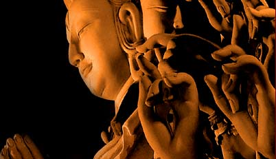

分别心之害
冯冯
迷失在未来 / 誊录
有些外教教士，于社会慈善工作，非常热心，他们的慈善救济与社会服务，深入到非洲腹地与南美洲森林，甚至遥远至北极冰天雪地，这种精神实在令人感动。他们对贫苦灾难，表露出的博爱精神与不畏艰苦，不怕污秽，亲为病者洗脓抹血，甚至于为麻疯病人洗澡，毫无怨苦的态度。可说已做到了博爱布施，尤其是对种族、疾病患者都无分别心，这是最值得我们学佛人赞叹的。
我们佛教，最注重慈悲布施，视之为六度万行之首善，同时，佛陀教训我们不可有分别心，必须以“平等心”普度众生。在这一点上面，外教的博爱与施予是与佛教相近的，可见真理与美德，是人同此心的。从另一角度来看，也可见外教的教义有与佛教同源的可能，或者是出于佛教。如果从人文历史先后次序而言，稍后的外教，采用了较先的佛教的崇教理想，亦不是没有可能，不过，此一点不在本文的讨论之列。
外教人士，于种族于疾苦都无分别心，但是，无可讳言，他们对于宗教信仰，则有很大的分别心！无论他们怎么爱世人，怎么说兄弟姊妹，怎么说慈善施予，怎么博爱，只要一提起其他宗教信仰，他们立刻就心胸狭窄了起来，无论如何都要坚持他们的神或上帝或主超于任何宗教，只有他们的信仰是“正”，别人所信仰的，不管是佛是道，通通都是“邪”神！纵然是亲友，也立刻分别心强烈得势同水火起来！（在宗教分别心上面，佛教徒然是比较浅薄的，较少因此争执。）
其实这种分别心，并不是他们原来教义的主张，在他们的经典之内，从来没鼓励分别心的言论。可以说，他们的分别心，只是源出于两个来源，其一是人心的“自我”“私心”，其二是中东某一地区偏狭的民族排外心理相沿成风的古老记载神话。这两种本来都不是新教的主张，不幸却都未能为教徒所了解。所以中东战争，自古而然，于今犹烈，这都是由于“分别心”所引起的祸害！
从这一点来看，就可见到佛经于“心”与“我”的分析是多么入微；如何治“心”；如何去“我”，是多么重要的一件事，又可知道，去掉“分别心”与无“人”“我”之见，是多么有贡献于人类与世界和平。因此在世界史上，从来没有发生过“卍字军东征”，或是“佛教僧王领军征服邻国”之类的以宗教为名的战争，不是没有理由的。
佛教与外教有一个很大的分野，就是外教虽主张博爱及戒杀，但是他们主张的戒杀只是戒杀人，并不包括戒杀其他众生。而佛教之主张戒杀生，则是戒绝屠杀任何有生命的众生，包括“有情生”与“无情生”，我们非但不可杀同类，也不可杀异类，我们非但不可杀人，也不可杀任何动物，甚至植物──我们吃植物，是不得已的维生，但亦不可滥杀，是以，古德诫人必须爱护草木勿予滥伤。佛教主张万物皆遂其生，放弃一切世间的物质享受，对万物众生都一律平等，不生分别心。这就是所以没有“佛教战争”的缘故。
自古以来，战争最多的地区，要算是中东了！他们的宗教教义其实也教人待他人如兄弟姊妹，不分彼此。不幸地，同源同祖先的中东各民族，分别心却是比任何种族都强烈，他们曲解了经义，对于一切都只用世上的物质观念来看，一切都以“我执”为中心，而分异己，形成仇恨，造成数千年以来自相残杀，冤冤相报，终至永无休止之地步。这是他们不懂因果，不知业报的可怕，他们只知道仇恨，只知道贪与欲，只知道分别“人”“我”。这些残酷的互相仇杀屠杀，可说是分别心造成的恶果！也是他们历代以牛羊骆驼驴马为食的冤冤相报果报！这是永无停止的恶因恶果的循环。
古代中东某一民族，每攻占一城一邦，必然屠城，凡非其族类者，悉被屠杀至尽。他们视此为最大的光荣的史迹，都记载在他们族史巨书经典内！他们自称是上帝唯一的选民，其他民族都是劣种，曾几何时，纳粹希特勒亦以最优秀人种自居，实行排斥其他不是金发蓝眼的人种，并且屠杀该一源起中东亚非地区的后裔，多达六百万人！集中营内，大批屠杀，血流成河，尸臭万里，焚尸炉日夜升烟……这不是果报么？不又是分别心之害么？（详情见拙着《恐怖的克拉维兹集中营大屠杀实录》──香港出版社），这些因果循环，没有终止，还会再循环下去！起因就是由于狭窄的分别心！可见分别心多么可怕！分别心并不是小事啊！
华侨在外国，数百年来，大多数受到外族的欺凌排挤，就是在现代也常听到这一国排华，那一国排华，这也都是外族的私我及分别心在作祟，华侨显然已经归化外国，但是形貌不同，因此无论外文讲得如何道地正确，工作如何辛勤苦干，行为如何守规循矩，对社会如何有贡献，外国的多数民族仍然是心存分别与歧视，不会当华侨是自己人！无论中国人如何在科技上吐气扬眉，也还是被外族歧视为“二等公民”。甚至于曾获诺贝尔物理奖的华裔大科学家，在某处海岸购买住宅时，也被外族居民联合拒售及驱逐！这都是那些分别心在作祟作怪！他们是从种族形貌上来分别，排斥异己！南非的种族战争，主因也就是分别心！
 佛陀教世人勿存分别心，这正是世尊的真知卓见与远见！诸佛菩萨以平等心平等力济度众生，正是宇宙中最崇高最无我的美德。（请读华严经以窥全豹）
不幸地，近日我们佛教圈内，也有不少人心存分别！固然佛教主张消除“分别心”与“傲慢心”等一切心病，但是我们都能做得到吗？我们做得澈底吗？我们很多人，上佛堂听佛经时，心中很明白，很平和，很清净，但是一离了经堂，就不知不觉地把佛经置之脑后了。才出佛堂，马上就生出分别心来了，有人说什么这位法师讲得好，而那位法师讲得不好，又有人说这位法师怎么样，那位首座嗓门不好，唱念不好……像这些琐碎闲话，已经反映出两件事：第一，是我们已有分别心，第二，是我们已犯了“两舌”“妄语”！这都是常在道场会后见到的听到的，每次我一听到，我立刻就合掌微笑念佛，不参与任何意见，我若要说话，就说：“悉发菩提心！勿生分别心！”如果是很熟的朋友，我就说：“我们多多自我检讨吧！静坐常思已过，闲谈勿论人非！”
当然我们人人都有批评他人之时，不过，如果动机出于善意与富建设性，那就不妨。但若出于我执的分别心，那就是我们修行上的一大败笔与灾祸了。
我们也常会看到或听到有些佛教徒，有意无意地高捧师门，而抑压其他宗教，说什么我信的宗教才是正信才是正法，你们信的学的都不是正信正法；或者说我的派别才是佛学真传，你们的不是；也有人说什么我们这一宗神通最高，别的宗派都不及我们；又有人说什么我们佛教教授的论文才是字字珠玑，其他的论文都是很肤浅；又说什么我们老师有国际学术地位，别的大学佛学教授都不及他；更有人说我们庙里的菩萨最灵，别的庙没这么威灵。（事实上，菩萨无所不在，还会分别在啥庙就灵，啥寺就不灵吗？真是可笑！（又有人说某寺的素斋好吃，有很多冬菇发菜，某庵的斋菜不好吃，太少冬菇发菜……又有人拼命巴结大施主，白眼穷施主，有人只乐捐本寺本宗的慈善布施，对别人的庙或道场的救灾或放生，则一概不捐，或则厚此薄彼……种种百项丛生。我们佛教内也有太多的分别心呀！真是知易行难啊！
分别心是学佛的魔障之一，我们修行人，无论在家人或者出家人，都应该努力去戒除分别心，而学习佛陀与诸菩萨的平等心心，才会有平等力自度度人呀！看看世上的许多分别心造成的祸害，我们还不应该警惕么？
要消除世界上之连绵祸害，首先，我们要做到教义上所示之“平等心”与“无分别心”！消除了分别心，就不会生出傲慢心、嗔心、仇恨心等等心病，于是世界之和平便指日可待了。
学佛修行，消除分别心是很重要的起步！
一九八七年四月八日予加拿大温哥华永忏楼，以此自励。
原载《现代佛教》72期：1987年5月1日